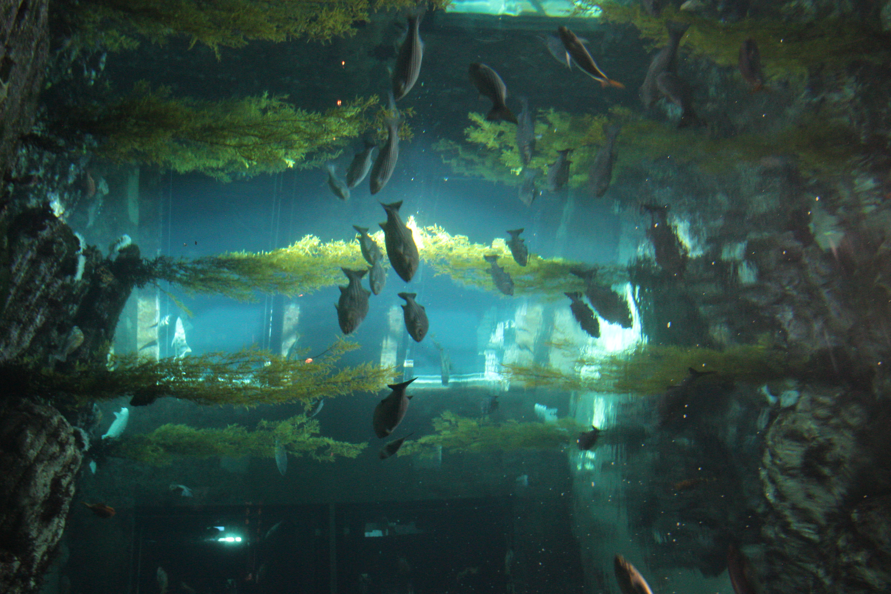
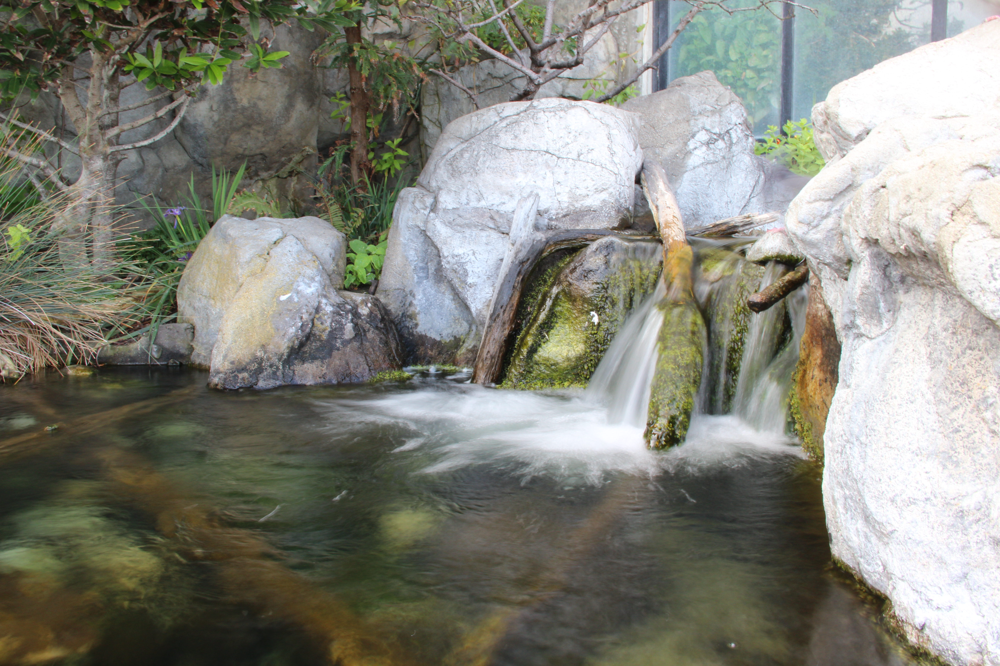

1 / 4
Bird Hǝavǝn Ŕ̶̢̲̮͖̱̟̘̫͚͕̬̫̬̲̼̳̯̟̤͙̽͆́̽̓͂̃̓͆̂̾̀̉̕͜͝o̵̡̡̧̠̪͔̜̤̣̹͗c̴̨͕̭̳̭̗̗̯̮̺̪̣͇̻̱̗̩̲̤̖̘̓͒͋͝k̸̠͉̓̓̋̏̚͝
2 / 4

ʎ̸̫̹̠͎̟̯̖̠̰̞̭͚̣͗͐̆̈́̂͜ę̴̨̳͙̲̍͆̀̽͐̑̒̄̒̽͛̃̓̂͐̾̀̃̏̏̚͝ɹ̶͇̠̝̮͔̮̏̐͘͝͠͠ǝ̸̛͍̻͚͍̬̪̔̉t̵̥͇̖̞̰̞̪̝̜͎̘̠̱̩̜̞͍͉̀̇̈́͒͂́̈́ū̵̢̨̮̬̠͇͈̠͙̜̝̤͎̤̥̠̫̭͙͈̺͛̎̓͘̚͜ơ̸̡̬̠͈̼̫̘͇̗̣̩̦͎͕͍̺̜̩̎͂̃͛̿̈́͆̿͊̆̃̊̌͗̑̆̀͒̀Ŵ̴͈̟̘͕͎̝̳̼̗̹͎̼̹̜͈̤̘̞̱͔̫̋̏ ̸̢̖̘̠̙͙̭̘̯̺̩͂͊ͅB̶̧̡̧̭͓͔̖͚̥̤̼̆̔̆́̃̿̓̐͝a̶̡̡̧̟͈̳̻̘̯̰̤̣̪̭͚̪̮̥͔̖̗̅̊̈́̑y̴̡̛̛̖̟̰͔͖͚̱͈̣̾̃̒͂̔̇̄̏̕̚͜ͅ ̵̢͎̦͓̺͈̙̹̹͍̻͓̻̩̭̮̝͉̭̟̾͗́͋͘͝A̶̟̰͓̳̜͓̲̬͎͓̠̗̣͉̲̦̟͑̓̓̈́q̸̺̒͝ủ̶̪͙̙̾̎͒̽̏́̊̈́͑̀̇̕͝ɐ̶̢̡̩͙̣͕̗͈̼̖͈̯̄̀̄̓̒̿̽̈́̑̋r̶̨̛̮̫̮̥̟̻̰̼̙̳͕͖̥̤͉͓̮͗̓͋̏̄̀͋̈̊̿̓͑̽̕͜͜í̸̛̜̯̂̔͐̉͂̀̔̓͂́̍̎̀̀̎̚̚͝͠ụ̴̢̼̒̊͗͒͌̕ͅɯ̶̢̛̟̩̘͖̏̎͑̈́͆̇̽͑̆͌́̏͗̽̓͒̀̈́̀͘͠ͅ Deep Reef
3 / 4

Rocky D̸͉̗͉͔͒̋̓́̋ȍ̸̥̊͗̌c̸̺̔͒͒͐̐k̸͓̞̘͔̾͐͌͋s̶̲͍̭͊̀̂̈́
4 / 4

The W̵̡̢̛̻̯̒͗͒a̷̦̦͛ʇ̵̡̢̼̤̥̓̊̅̂͝ǝ̸͓̙̐̑r̸͙͆͛̌̕f̵̮̞̌̈́̑å̴̬̭̈́ľ̸̬͓̱̯̖̋ḷ̶̻̗͖͉̂̔